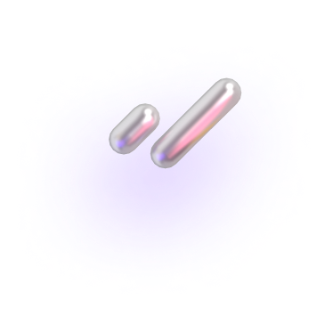
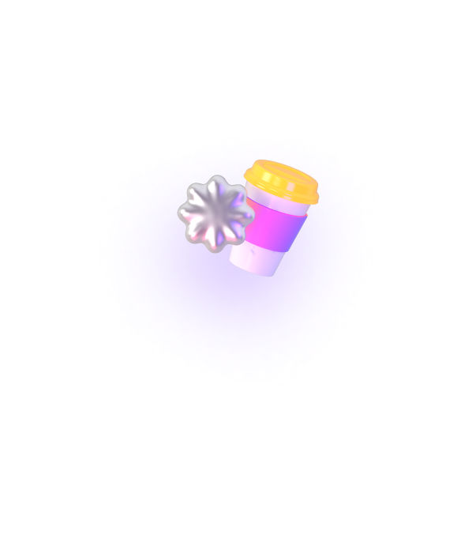
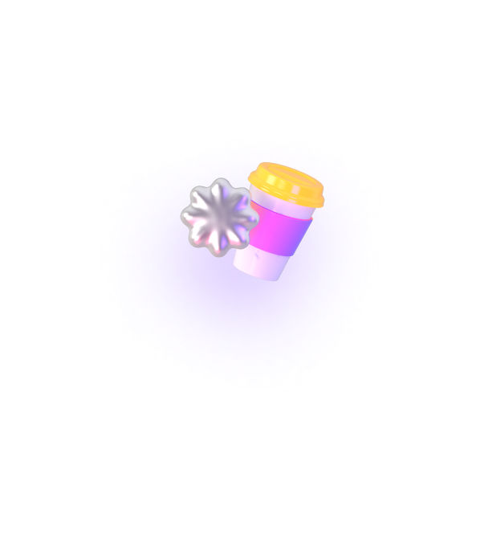
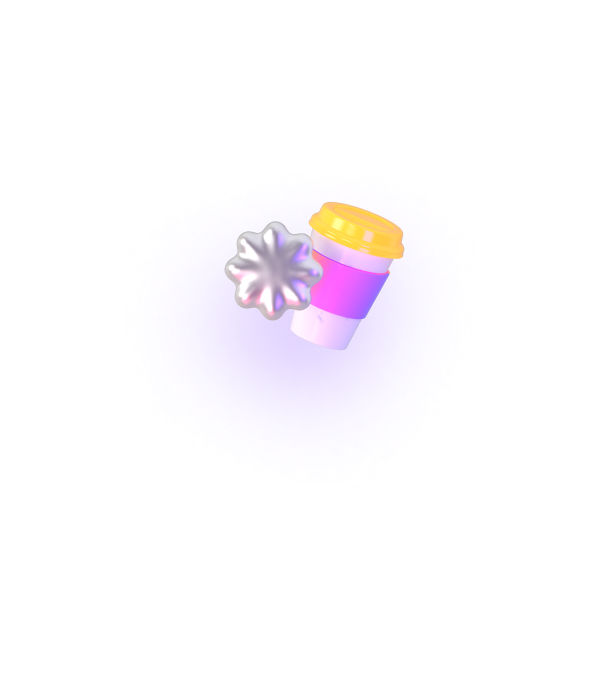
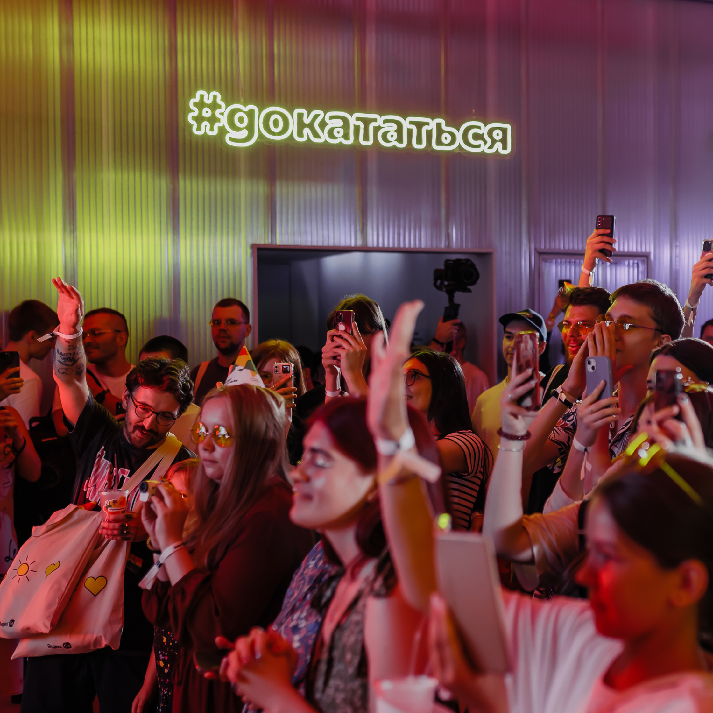
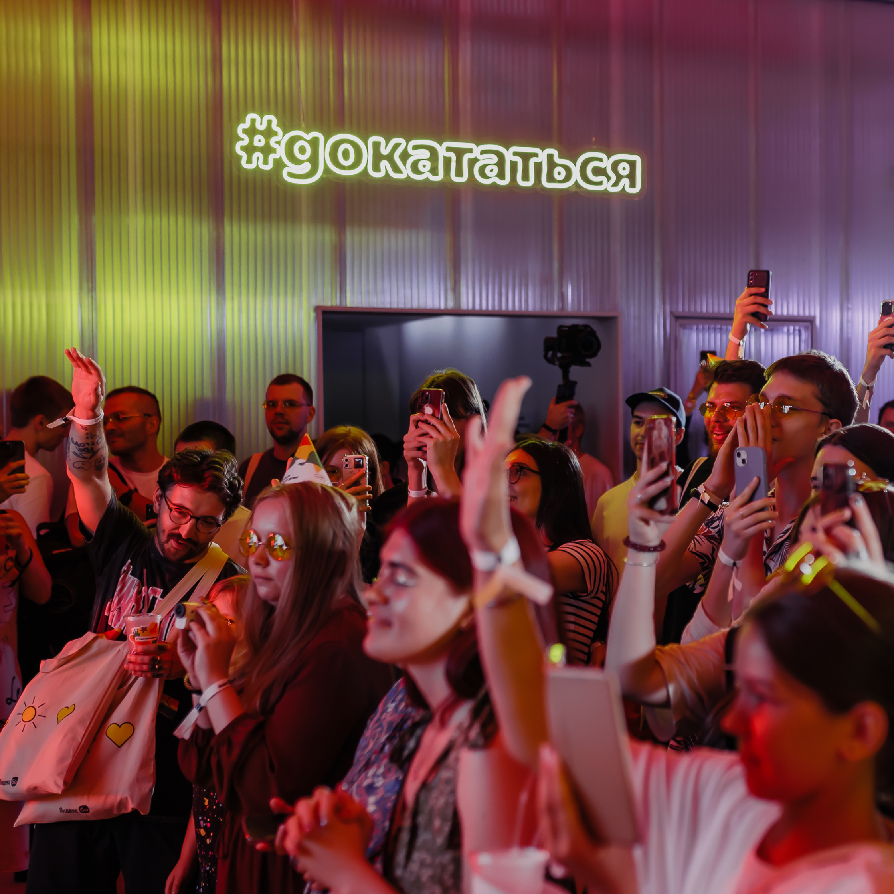
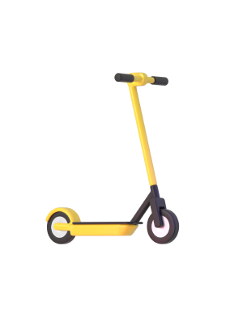
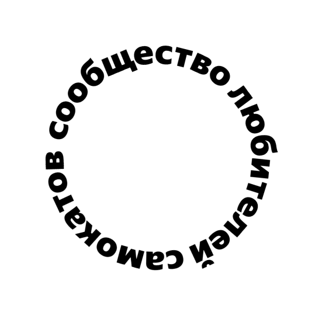

Вот что даёт участие в клубе

0 ₽ за старт в каждой поездке

Катаетесь с друзьями? Бронируйте до трёх самокатов с аккаунта с абонементом — так у всех будет бесплатный старт

Бесплатная пауза 15 минут в поездке — например, чтобы зайти за кофе или передохнуть

Если самокат недостаточно заряжен или с ним неудобно переходить дорогу, замените по пути на другой — это бесплатно
Эксклюзивный доступ
к событиям Самокатов
С абонементом — у вас доступ
к специальным мероприятиям,
скидки и классный мерч. В 2023 году
мы танцевали на Даче Плюс
с Антохой MC, катались на самокатах
с Сергеем Мезенцевым и слушали хор
Attaque de Panique
к специальным мероприятиям,
скидки и классный мерч. В 2023 году
мы танцевали на Даче Плюс
с Антохой MC, катались на самокатах
с Сергеем Мезенцевым и слушали хор
Attaque de Panique


 


 


Купить абонемент и вступить в клуб смогут те, кто в Плюсе
За каждую поездку на самокатах такие пользователи получают кешбэк
баллами. Баллы можно тратить на поездки на самокатах и такси
с Яндекс Go, покупки и заказы в других сервисах Яндекса
80 % наших пользователей уже в клубе и экономят на поездках
Присоединяйтесь — опция начнёт действовать в начале сезона–2024.
Об открытии сезона предупредим заранее, чтобы вы были готовы
Хочу абонемент

